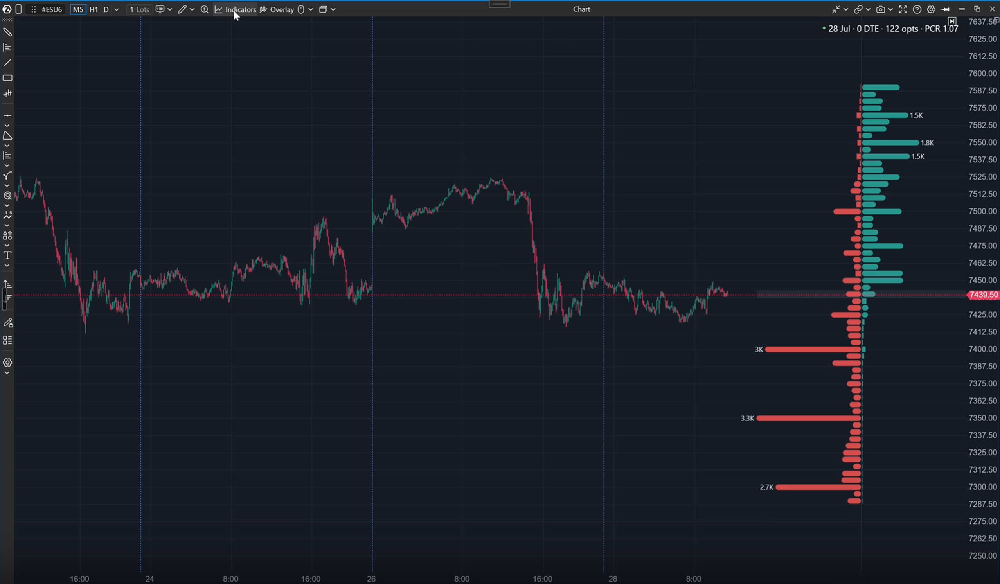
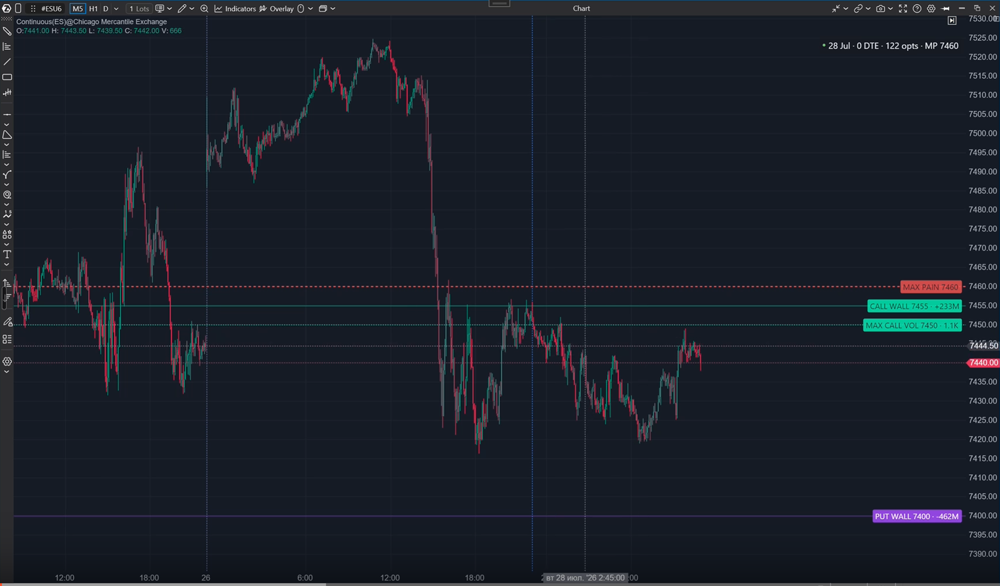
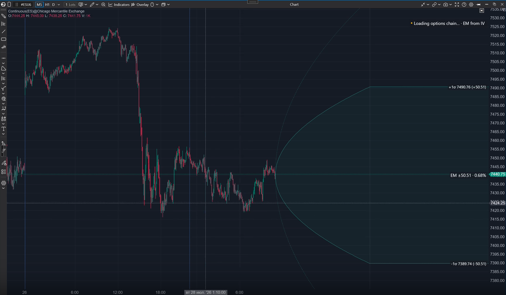
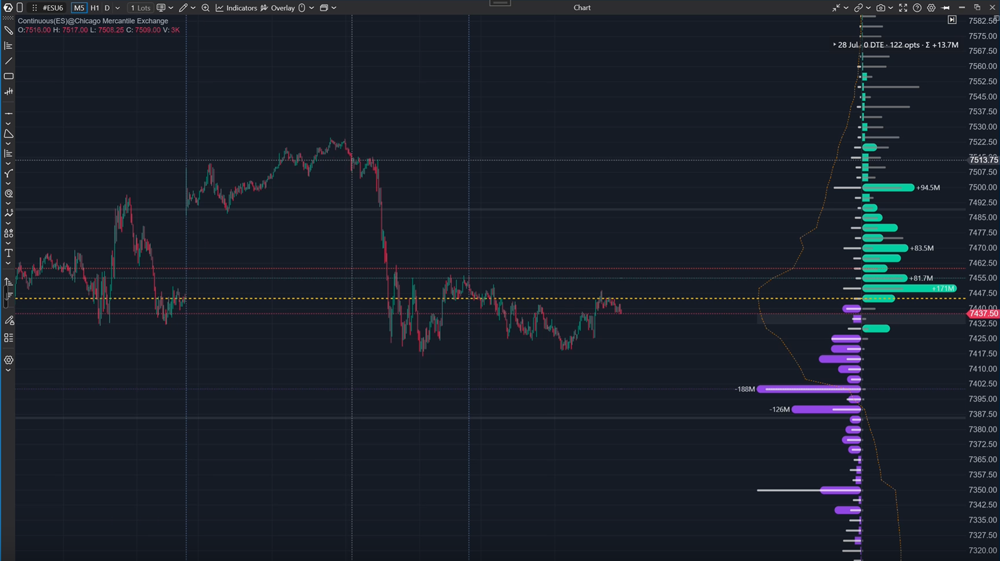

6. Options Chain: la primera era en el gráfico del usuario
Todo lo que desmontamos en la lección anterior, los traders de ATAS lo ven
directamente en su propio gráfico — sin tablero de opciones, sin tablas, sin
servicios de terceros. El paquete Options Chain son cuatro indicadores en la
categoría Options: el perfil de open interest, los niveles clave, el expected move
y el perfil GEX. Se colocan sobre un gráfico de futuros corriente — ES, NQ, CL, GC
y otros contratos de CME — y dibujan el cuadro de opciones directamente encima del
precio que el usuario ya opera.
Esta lección es un recorrido por el paquete — y un compendio de las preguntas más
frecuentes sobre los productos de opciones de la primera era.
De dónde vienen los datos
Antes de mirar las imágenes — tres hechos sobre la fuente, de los que brota la
mitad de las preguntas frecuentes.
Primero: los datos de opciones los entregan solo dos proveedores de conexión —
Interactive Brokers y Rithmic.
Segundo: los datos llegan en tiempo real, sin historia. Con el indicador en el
gráfico, el usuario ve la foto actual del mercado de opciones. Las cosas
acumulativas, como el volumen del día, se cuentan desde el momento de la
suscripción: un indicador encendido a mediodía solo conoce el volumen desde
mediodía.
Tercero: el propio open interest lo sigue publicando la bolsa una vez al día — lo
vivo aquí son las cotizaciones, el volumen y todo lo que se calcula de las
cotizaciones: IV, griegas, GEX. La primera era, con todos sus indicadores, sigue
apoyada en el OI diario.
Options Chain: OI Profile
El perfil de open interest de la lección anterior, en carne y hueso: por el borde
derecho del gráfico, barras al nivel de cada strike, calls turquesa y puts coral,
los nudos más grandes etiquetados con números. Al pasar el ratón por una barra, el
strike se despliega en detalle: OI, volumen, volatilidad, delta.

El perfil tiene tres modos, y conviene distinguirlos. Open Interest — posiciones
acumuladas, la vista principal. Day Volume — dónde se está negociando hoy: la
batalla fresca en vez de los arsenales viejos. Net OI — el exceso de calls o
puts en cada strike, mostrado como una sola barra. En el panel de estado el perfil
muestra el PCR — la ratio put/call: por encima de uno, los puts son el lado más
activo; por debajo, los calls.
Options Chain: Key Levels
Los mismos datos, pero en vez del perfil completo — solo las conclusiones: unas
pocas líneas horizontales cruzando todo el gráfico. MAX PAIN, CALL WALL, PUT
WALL — el trío conocido de la lección 5; opcionalmente, los strikes con mayor
volumen del día, mostrando dónde se libra la batalla de hoy. Es el indicador más
listo-para-usar del paquete: niveles de soporte y resistencia del mercado de
opciones sin necesidad de descifrar perfiles.

Recuerda de la lección 5: estos niveles trabajan con más fuerza los días de
vencimiento y la víspera — su fuerza nace de la gamma.
Options Chain: Expected Move
El expected move, dibujado como un pasillo que corre hacia la derecha desde la
vela actual: los bordes interiores son ±1σ (el movimiento en el que el mercado de
opciones cree con un 68% de probabilidad aproximada), los exteriores discontinuos
son ±2σ (un 95% aproximado). Una etiqueta como EM ±42.50 · 0.74% se lee como «el
mercado cotiza un movimiento de cuarenta y dos puntos y medio hacia cualquier
lado».

El pasillo se lee así: los bordes son objetivos naturales y zonas de toma de
beneficios; un movimiento más allá de ±1σ ya hace un día fuerte; más allá de ±2σ,
uno extremo, a menudo seguido de un retroceso. El ajuste Anchor cambia el punto de
referencia: Current Price — el pasillo respira junto con el precio; Attachment
Price — fijado desde el momento de colocarlo, útil para ponerlo por la mañana y
medir el día contra las expectativas matinales. Y un detalle que los usuarios
suelen confundir con un bug: en un vencimiento corto, el pasillo se estrecha a lo
largo del día. Así debe ser — queda cada vez menos tiempo hasta el vencimiento, y
el resto esperado del movimiento se derrite con él, como la theta en la lección 3.
Options Chain: GEX Profile
La exposición gamma por strike — el perfil GEX de la lección 5, por el borde
derecho del gráfico. Barras turquesa a la derecha — gamma positiva (la cobertura
frena el precio); barras coral a la izquierda — negativa (acelera el movimiento).
La línea ámbar ZERO GAMMA es la divisoria entre regímenes; GEX WALL marca los
nudos más grandes. En el panel de estado — la exposición total del libro en la
forma Σ +2.4B: el más significa mercado en régimen tranquilo; el menos, en el
nervioso.

La primera era, montada al completo: OI diario, cotizaciones en vivo, cuatro
indicadores — y un mapa de niveles perfectamente utilizable para cada día. Todo
este arsenal se construyó para un mundo donde una opción vivía semanas y meses, y
las posiciones de ayer describían honestamente el mercado de hoy. Pero alrededor
de 2022 el propio mercado empezó a vivir de otra manera: las semanas cedieron el
paso a opciones que nacen por la mañana y mueren la tarde del mismo día. Qué le
hicieron al mercado — y por qué el mapa diario dejó de seguirle el ritmo — es la
siguiente parte del curso.
- Options Chain - cuatro indicadores de la primera era sobre futuros de CME (ES, NQ, CL, GC): OI Profile, Key Levels, Expected Move, GEX Profile.
- Los datos vienen solo de IB o Rithmic, en tiempo real y sin historia; el OI en sí sigue siendo diario.
- El panel de estado en la esquina del gráfico es el primer paso para desmenuzar cualquier «no muestra nada».
- Los números difieren legítimamente de los servicios de terceros: otra fuente, otro momento de medición, otra cobertura de strikes.